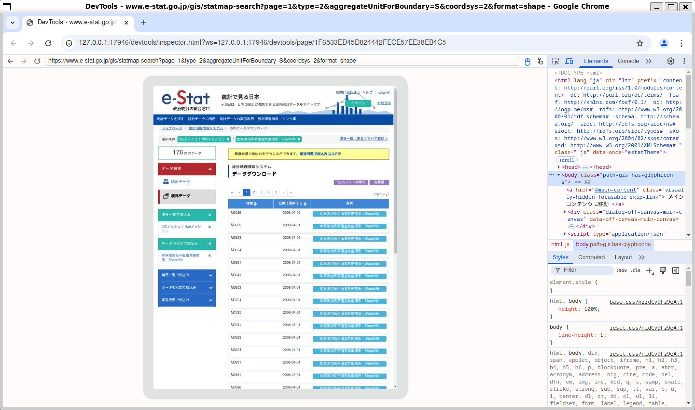

library(rvest)
library(here)はじめに
今回はRでスクレイピングを行っていきます。rvestパッケージを使ったスクレイピング自体は他のウェブサイトでも多数紹介されているのですが、今回JavaScriptが使われているページ（特にe-Stat）にも対応した方法をまとめます。これを行うには既に紹介されている方法からもう一工夫する必要があり、それも少々面倒です。
これまで僕はブラウザ拡張機能の「DownThemAll!」1を使って無理くり実行していたのですが、この手の方法は再現が難しいし手間という欠点があるので、できればR上でコードとして残しておきたいと思っていました。そんなところ友人からあるページを紹介してもらい、抱えていた課題2が解決できそうでしたので、これを機にまとめていきます。
紹介してもらったページはこちらです↓
また、Google Chromeを使用するので、インストールしていない方はしておいてください。
使用するパッケージ
使用するパッケージは以下の通りです。Rプロジェクトを使うなりsetwd()を使うなりでワーキングディレクトリを現在のディレクトリに設定しておいてください。プロジェクトについてはこちら。
ファイルをダウンロードするページ
今回ファイルを取得していくのは、e-Statの「地図」→「境界データダウンロード」→「3次メッシュ」→「世界測地系平面直角座標系・Shapefile」のページです。
メッシュいうのは国土を例えば1km×1kmの正方形で区切ったものをいい、その中の人口等のデータを扱うことができるようになります。このあたりの詳細は以下の書籍が非常にわかりやすいのでおすすめです。RでGISを扱う方法も学べます。
ページを取得
基本的にはread_html()関数で読み込むことができるのですが、JavaScriptを使用しているような動的なページには対応していません。そこで使用するのがread_html_live()関数です。これらの関数の仕組み自体は冒頭で紹介したページがわかりやすいのでそちらを読んでみてください。
先ほどのURLを読み込んでみましょう。
html <- read_html_live("https://www.e-stat.go.jp/gis/statmap-search?page=1&type=2&aggregateUnitForBoundary=S&coordsys=2&format=shape")
# ページを見る
html$view()以下のようなページが表示されれば成功です。

ファイルのリンクを取得
次にいよいよファイルを取得していきます。僕もHTMLに詳しいわけではないので詳細は書きませんが、aタグというのがリンクを生成するためのもので、その中にhrefという属性があります。例えば
<a class="stat-dl_icon stat-statistics-table_icon" tabindex="40" href="/gis/statmap-search/data?dlserveyId=S&code=3036&coordSys=2&format=shape&downloadType=5">
<span class="stat-dl_text">世界測地系平面直角座標系・Shapefile</span>
</a>というようになっており、aと/aで囲まれている間にhrefやその他の属性が含まれていることがわかります。
どうやって探す？
このHTMLはどうやって探せばよいのでしょうか。実はブラウザ上から簡単に見ることができます。
ブラウザ上で任意のページを開いたら、Ctrl + Shift + Iを同時に入力します。もしくはブラウザ右上の点々から「その他のツール」→「デベロッパー ツール」でも開けます。

すると画面右側になにやらぶわぁーっと出てきますね。これの上半分がHTMLコードです。ここから特定のコードを探すのは骨が折れそうですが、逆にページの要素をクリックすることで該当するコードを探すことができます。デベロッパーツール画面上部の左側にカーソルのようなアイコンがあります。

これをクリックしたうえでページ上の要素にカーソルを重ねてクリックすると、該当箇所のコードが表示されます。カーソルを「世界測地系平面直角座標系・Shapefile」という文字に重ねると先ほどのコードが表示されます。
ここではaタグを探す→hrefを探し取得する、という手順を踏みます。
links <- html |>
html_elements("a") |>
html_attr("href")html_elements("a")でaタグを探し、html_attr("href")で属性（attribute）を探しています。linksにはaタグの中のhrefに入っているリンクがずらーっと入っていることになります。
ここでは表示しませんが、linksの中身を確認すると、想像以上にたくさんのリンクが入っていることがわかります。ここからさらにシェープファイルのダウンロードリンクを探さなければなりません。
上のaタグの例を見てもらうと、/gis/statmap-search/data?dlserveyId=S&code=3036&coordSys=2&format=shape&downloadType=5というのがシェープファイルのダウンロードリンクであることがわかります。他のシェープファイルのリンクと見比べてもらうと、code=3036の部分だけがそれぞれ異なっており、他は同じです。すなわち、まとめてダウンロードしたければこの部分さえうまいことやれば可能になるということです。
とりあえず、数多のリンクの中からシェープファイルのリンクだけ抽出しておきましょう。linksの中のリンクを確認すると、data?dlserveyId=S&という部分がシェープファイルのダウンロードリンクにのみ含まれていることがわかる、これを含むリンクを抽出すればよいことになります。
shp_links <- links[grepl("data\\?dlserveyId=S&", links)]ポイント：
grepl()で条件に合致するものを抽出grepl(x, y)で、yの中でxを含むものにTRUEを返すlinksの中でdata\\?dlserveyId=S&を含むものにTRUEを返している?の前に\\が入っているのは、正規表現の中で?は特別な役割を持っているので、その役割として認識されるのを防ぐため（エスケープしている）
links[ ]で、TRUEを持つものを抽出している- すなわち
grepl()でTRUEを返したもの（=シェープファイルのダウンロードリンクをもつもの）だけが残る
- すなわち
短いコードでもややこしいですね。特に記号のところには気を付けていただければと思います。
リンクを整形する
お気づきの方もいらっしゃると思いますが、実は先ほどのリンクは相対的なものです。https://から始まっていません。ベースとしてhttps://www.e-stat.go.jpというURLがあり、そこに続く形で/gis/...が入ってきます。
以下では取得したリンクにベースリンクをくっつけていきます。
base_url <- "https://www.e-stat.go.jp"
full_urls <- paste0(base_url, shp_links)
print(full_urls)[1] "https://www.e-stat.go.jp"ご覧のようにページ内の20個のリンクを抽出することができました。次にこれらのリンクを使ってダウンロードしていきます。
ファイルをダウンロード
いよいよダウンロードをしていきます。
まず保存するフォルダがなければ作成します。作成する場所は好きなところで大丈夫です。here("data/shapefiles")とか。
# ダウンロード用のフォルダがなければ作成する
if (!dir.exists(here("shpfiles"))) {
dir.create(here("shpfiles"))
}全てのリンクに対しダウンロードするコードを適用します。forの出番です。
for (i in seq_along(full_urls)) {
# リンクからメッシュコードを取得
code <- sub(".*code=([0-9]+).*", "\\1", shp_links[i])
# ダウンロードするファイルのパスを指定する
# 例: shpfiles/shpfile_3036.zip
file_path <- here("shpfiles", paste0("shpfile_", code, ".zip"))
# ファイルをダウンロード
download.file(full_urls[i], destfile = file_path, mode = "wb")
# アクセス間隔を空ける
# サーバー負荷を考慮
Sys.sleep(2)
}ポイント：
seq_along(full_urls)はfull_urlsの要素の数を取得している- 今回はURLが20個と分かっているが、数が多くて数えにくいような場合にも有用
sub(".*code=([0-9]+).*", "\1", shp_links[i])でメッシュコードを取得sub(pattern, replacement, x)でxのpetternをreplacementに置換する.*code=([0-9]+).*はざっくり言うと、前後が何であれcode=(何らかの数字)というものを探してきて、括弧内の数字を取得しているということ\\1は今取得した数字を返すということxにはshp_links[i]が該当するので、i番目のリンクで上で述べた置換をしているということ
here("shpfiles", paste0("shpfile_", code, ".zip"))で保存する際のファイル名を作成現在のワーキングディレクトリにある
shpfilesというフォルダの中にshpfile_3036.zipというようなZipファイルを作成するダウンロードはzipファイルで行われるので拡張子は
.zipとしておく
my_project/
├── data/
├── shpfiles/ ← ここにダウンロードする
└── scripts/
├── download_script.R
├── analysis.R
└── ...download.file(full_urls[i], destfile = file_path, mode = "wb")でダウンロードdownload.file(url, destfile, mode)でurlをdestfileにmodeで指定したモードでダウンロードする詳細は省くが、Zipファイルに対しては
mode="wbを指定する
Sys.sleep(2)でサーバー負荷を軽減する- 作業ごとに2秒のインターバルを設けるということ
さすがに面倒すぎますね。最初は困ると思いますが、2回目以降大変便利に思えるはずです。
ひとまずこれでページ上のファイルをダウンロードすることができました！
今後について
今回は1つのページにある複数のファイルをダウンロードする方法をまとめてきたのですが、やはりしたいこととしては9ページ分のファイルをダウンロードすることです。
しかし現状の限界として、2ページ目を読み込む際にエラーが避けられないということがあります。一度読み込んだ状態で別のページをread_html_live()しようとすると、以下のエラーが出ます。
Error in callback(...) : code: -32602
message: Target position can only be set for new windows自分の理解では対処法がわからず、逐一Rのセッションを終了することが今の最善策となっています。ローカルのRStudioではアプリを一度閉じることで再びread_html_live()が可能になります。RStudio Serverであれば右上ので一度閉じ再度開くと可能になります。
URL内のpage=1の数字部分を変えながら進めていくのが現状の方法となります。
コードまとめ
最後に今回のコードをまとめます。
コードの実行について
今回は各コードを個別に紹介してきましたが、ひとまとめにして回す場合、コードの実行間隔が短すぎて十分に取得できないまま次に進んでしまうことがあります。そのため途中にコードを追加しています。ご確認ください。
library(rvest)
library(here)
html <- read_html_live("https://www.e-stat.go.jp/gis/statmap-search?page=1&type=2&aggregateUnitForBoundary=S&coordsys=2&format=shape")
html$view()
# 一気に回すために追加
Sys.sleep(3)
links <- html |>
html_elements("a") |>
html_attr("href")
shp_links <- links[grepl("data\\?dlserveyId=S&", links)]
base_url <- "https://www.e-stat.go.jp"
full_urls <- paste0(base_url, shp_links)
if (!dir.exists(here("shpfiles"))) {
dir.create(here("shpfiles"))
}
for (i in seq_along(full_urls)) {
code <- sub(".*code=([0-9]+).*", "\\1", shp_links[i])
file_path <- here("shpfiles", paste0("shpfile_", code, ".zip"))
download.file(full_urls[i], destfile = file_path, mode = "wb")
Sys.sleep(2)
}おわりに
今回はRでe-Statのシェープファイルを取得してきました。個人的にもずっとやりたいことだったので、不完全とはいえ、念願かなった感じです。
今後も調査して全ページを一つのループでダウンロードできるようなコードを書いていきたいと思います。